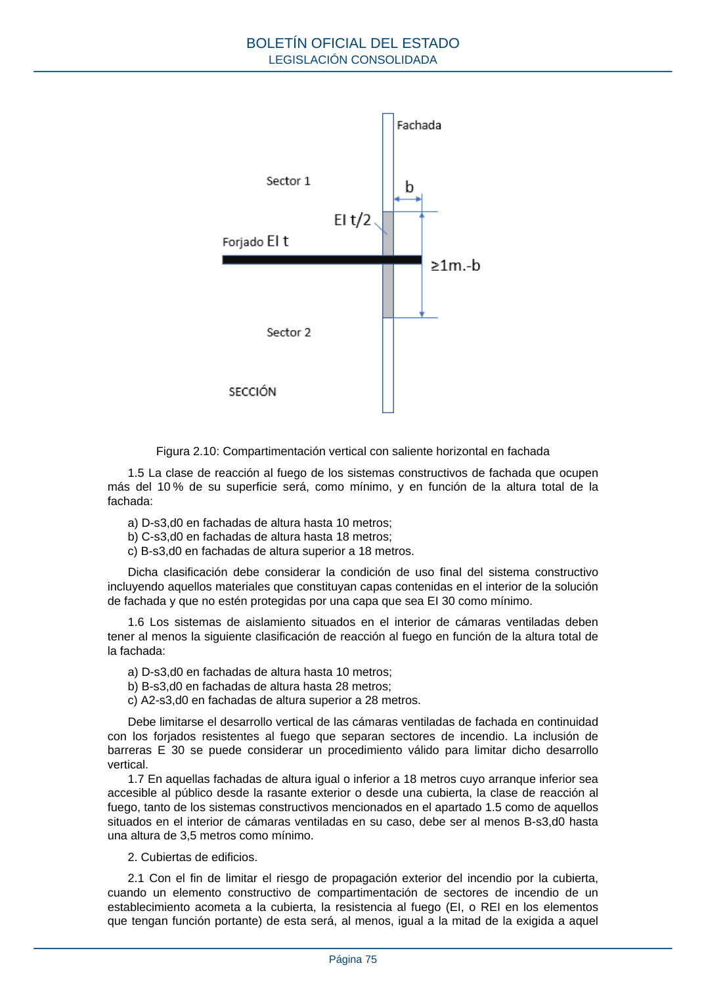

RSCIEI · Página 75 · versión 2025-04-10
SHA256: 85aa0af25d51e5b58d8975a4eefbf76d3f57a8933445cfe814ae9c4818a2e3e7 · página física 75 de 108 · métodos de encabezado
solo si están cotejados.
Formatos: Markdown · JSON de bloques · PDF p. 75 · imagen PNG
Figura 2.10: Compartimentación vertical con saliente horizontal en fachada 1.5 La clase de reacción al fuego de los sistemas constructivos de fachada que ocupen más del 10 % de su superficie será, como mínimo, y en función de la altura total de la fachada: a) D-s3,d0 en fachadas de altura hasta 10 metros; b) C-s3,d0 en fachadas de altura hasta 18 metros; c) B-s3,d0 en fachadas de altura superior a 18 metros. Dicha clasificación debe considerar la condición de uso final del sistema constructivo incluyendo aquellos materiales que constituyan capas contenidas en el interior de la solución de fachada y que no estén protegidas por una capa que sea EI 30 como mínimo. 1.6 Los sistemas de aislamiento situados en el interior de cámaras ventiladas deben tener al menos la siguiente clasificación de reacción al fuego en función de la altura total de la fachada: a) D-s3,d0 en fachadas de altura hasta 10 metros; b) B-s3,d0 en fachadas de altura hasta 28 metros; c) A2-s3,d0 en fachadas de altura superior a 28 metros. Debe limitarse el desarrollo vertical de las cámaras ventiladas de fachada en continuidad con los forjados resistentes al fuego que separan sectores de incendio. La inclusión de barreras E 30 se puede considerar un procedimiento válido para limitar dicho desarrollo vertical. 1.7 En aquellas fachadas de altura igual o inferior a 18 metros cuyo arranque inferior sea accesible al público desde la rasante exterior o desde una cubierta, la clase de reacción al fuego, tanto de los sistemas constructivos mencionados en el apartado 1.5 como de aquellos situados en el interior de cámaras ventiladas en su caso, debe ser al menos B-s3,d0 hasta una altura de 3,5 metros como mínimo. 2. Cubiertas de edificios. 2.1 Con el fin de limitar el riesgo de propagación exterior del incendio por la cubierta, cuando un elemento constructivo de compartimentación de sectores de incendio de un establecimiento acometa a la cubierta, la resistencia al fuego (EI, o REI en los elementos que tengan función portante) de esta será, al menos, igual a la mitad de la exigida a aquel BOLETÍN OFICIAL DEL ESTADO LEGISLACIÓN CONSOLIDADA Página 75
